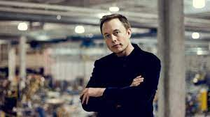
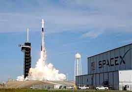

ایلان ریو ماسک در ۲۸ ژوئن سال ۱۹۷۱ در پرتوریا، آفریقای جنوبی متولد شد. وی فرزند ارشد یک خانوادهٔ ۵ نفره بود. پدر وی، اِرول ماسک متولد آفریقای جنوبی و بزرگ شدهٔ انگلیس، مهندس و مادر کانادایی – انگلیسی وی به اسم مِی ماسک متخصص رژیم غذایی و مدل بود. وی یک برادر کوچکتر به اسم کیمبال (متولد ۱۹۷۲) و یک خواهر کوچکتر به اسم توسکا (متولد ۱۹۷۴) دارد. ایلان ماسک زمان بچگی خود را در آفریقای جنوبی سپری کرد. ماسک ۱۰ ساله بود که پدر و مادر وی از یکدیگر جدا شدند و ایلان اکثر وقت ها را با پدرش در آفریقای جنوبی زندگی می کرد. در سن ۱۰ سالگی نخستین کامپیوتر شخصی خود، کمودور وی آی سی- ۲۰ را خرید. ایلان به برنامه نویسی علاقمند شد و تنها آغاز به یادگیری این مهارت کرد.
ایلان ماسک
در سن ۱۲ سالگی با فروش بازي کامپیوتری Blastar که شخصاً آن را طراحی کرده بود، ۵۰۰ دلار بدستآورد پس از فارغ التحصیلی از دبیرستان ماسک قصد کرد که بدون حمایت خانواده به ایالات متحده هجرت کرده و منزل را ترک کند.
ایلان ماسک در سال ۱۹۸۹ از طريق خویشاوندان مادرش به کانادا نقل مکان کرد. پس از این که حق شهروندی کانادا را بدست آورد به مونترآل رفت. در ابتدا به هر شغل کم درآمدی راضی بود و کار می کرد و تقریبا یک سالی بود که با فقر دست و پنجه نرم می کرد.
ایلان ماسک ( Elon Musk) به عنوان مشهور ترین مرد جاه طلب دنیای علم و تکنولوژی در عصر جدید، برای خیلی از ما جذاب و خواندنی است. در ادامه فراز و نشیب های زندگی ایلان ماسک را با هم مرور خواهیم کرد.
ایلان ماسک به انگلیسی (Elon Musk) متولد ۱۹۷۱ آفریقای جنوبی، مهندس، مبتکر و فرد نامی تجارت در صنایع توسعه یافته آمریکایی است. وی بنیانگذار شرکت هایی مانند تسلا موتورز، پی پال (PayPal که اینک به ای آزاد دارد) و اسپیس اکس (SpaceX) است.
وی هم اینک مدیرعامل و مدیرفنی در اسپیس اکس و مدیرعامل و طراح محصول در تسلا موتورز است. وی روی پروژه هایی سرمایه گذاری مي کند که پتانسیل تغيير دنیای اطرافمان را دارند. ایلان ماسک نه تنها یک کارآفرین، بلکه یک مخترع، مبتکر و مهندس است: ماسک شخصاً در طراحی خودروهای برقی و سفینه های فضایی شرکت می کند.
ماسک همچنين در حال توسعهٔ یک سیستم حمل و نقل با سرعت بالاست که تحت عنوان هایپرلوپ (Hyperloop) شناخته شده است.
| نام دانشگاه | مدرک | ||||||||||||||||||||
|---|---|---|---|---|---|---|---|---|---|---|---|---|---|---|---|---|---|---|---|---|---|
| کوِئینز | هنر | ||||||||||||||||||||
| پنسیلوانیا | فیزیک | ||||||||||||||||||||
| وارتون | علوم اقتصاد |
| نام شرکت | سال تاسیس |
|---|---|
| زیپ-2(zip2) | 1995 |
| پی پل(PayPal) | 1999 |
| اسپیس ایکس(SpaceX) | 2017 |
| تسلا(TeslorsaMot) | 2008 |
| مشخصات | ... |
|---|---|
| نام | ایلان ماسک |
| تاریخ تولد | 1971 |
| محل تولد | افریقا جنوبی |
| والدین | ارول و مایه ماسک |
ایلان ماسک به عنوان ۳۸ امین فرد قدرتمند دنیا، ۱۵ امین ثروتمند در حوزهٔ تکنولوژی و ۱۰۰ امین میلیاردر دنیا در سال ۲۰۱۵ شناخته شده است. اموال خالص وی در سال ۲۰۱۵، ۱۳٫۹ میلیارد دلار و فعلا ۱۰٫۷ میلیارد دلار محاسبه شده است.
ایلان ماسک دومین کارآفرین (نخستین نفر جیمز اچ کلارک بود) در سیلیکون ولی بود که موفق شد سه شرکت با ارزشی بیش از ۱ میلیارد دلار – پی پل، اسپیس ایکس و تسلا موتورز- را به وجود آورد. ایلان ماسک زندگی کاری خود را به تکنولوژی های فضایی و انرژی های جایگزین اختصاص داده است. وی ایده های مختلفی را اجرا ميکند و تقریبا همهٔ آنها هم کاملا موفقیت آمیز هستند. از خصوصیت های شخصیتی ایلان ماسک میتوان به اندیشه انتقادی، پشتکار و اراده، تفکیک و تحلیل دقیق و کوشا بودن اشاره نمود (وی بین ۸۰ تا ۱۰۰ ساعت در هفته کار می کند)
مطالب بیشتر به زودی...